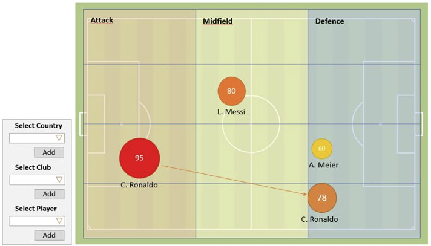

Project Info
Motivation
Since both of us were convinced from the start of the module, that we won't be collecting data, but rather use an already an existing dataset, we search for quiet some time - and struggled some time with this. We then thought about our hobbies, interest and affinities. Both are interested in sports: Rafael plays in a regional football club and Tobias is part of a fire engine. Both really like to play video games - so we had a further scope to search for and finally found an interesting data collection: FIFA 19 players
Our Data
As stated previously, we decided to analyze FIFA player stats. We found a suiting file on Kaggle. The dataset is a csv where columns are separated by commas. The information is vast and not all of the dimensions will be used in our projections & visualisations. We will mainly focus on the following stats:
Notes:
-
The below data is reflecting values for players origin rather than where they currently play (e.g.: The numbers in Egypt are means of all players with home country Egypt).
-
Not all countries have data available. We are using data provided by the Kagle dataset referenced further above on this page.
-
Player ratings are numbers from 1 to 99, where a higher number means a better overall rating. Player values & wages are normal values in EUR.
Instructions
-
Select your filter criterias
-
Click the "Click Me!" button
-
(optional) Choose another value to be displayed
-
Enjoy the changes in the graph :-)
Design Choices
We first had to analyze and transform the data. It quickly became clear that the quality of the data left a lot to be desired.
With the cleansed data, we first looked at how we could achieve our design goals described above.
Choosing the right visualization
We made different sketches and realized that the most understandable and clear presentation was a map that
assigned different colors to countries given specific data ranges. Nevertheless, we had to keep in mind that there
is only a certain number of colours that can be easily distinguished. Therefore, as soon as you move a mouse
over the countries, they get a contour that indicates the exact size of the country. In addition, we decided
to use a tooltip which, for example, shows the exact average rating of the players in a country.
Foundations Visual Design
Our initial goal was to visualise a quick overview of the FIFA player ratings for each country. Kagle's data set gave us information about the individual players and their origins. With this information we could concentrate ourselves on giving simple and quick information on which countries offer better players (alongside other possible criterias) rather than overflow the visualization with additional data.
Fundamental Principals of Analytical Design
Our visualization is dividede into two parts: One for the purposes of brushing the data, the other for the actual visualization and fast adjustment of a given criteria. The dimensions implemented require the following:
-
Longitude & latitude to draw each individual country
-
Color ratio to display differences in selected value
-
Tooltip to allow for detail on demand & "Integration of Evidence"
We have implemented several brushing & filter criterias. Without any settings done, the first overview will be the overal mean player rating. The color scale ranges from white (no data available) to a dark orange (darker = higher average). The color gradient is based on the data selected for display, which can be set just above the map itself. We set 8 different steps in this gradient since we thought that this offered the best deal out of seeing to little to too much differences.
Data-Ink Ratio
To maximize the efficiency of our visualization, we took good care of how big our visualizations are, how much space each individual information needs (e.g. our tooltip) and how much data is really needed.
“A large share of ink on a graphic should present data-information, the ink changing as the data change. Data-ink is the non-erasable core of a graphic, the non-redundant ink arranged in response to variation in the numbers represented.” Tufte, 1983
When we designed our map we held the data-ink ratio as high as possible.
Human Perception
Whilst programming this website, we laid a big importance on the flow whilst reading and scrolling through the page. To enhance the engagement and visual attractiveness we settled for a "cool" website template, which suited our topic.
Starting with a top navigation bar, clear instructions and informations about our data, and then followed by our visualization, we found a good approach on how the user is being guided through our project.The transition of actions is natural, causal and hierarchical.The visual changes, when filters are applied, further increase the interactivity.
Interaction Concept
Our visualizations consist of brushing and filtering. As soon as the desired filters are being selected and the "Calculate" button is clicked, the data will be usable for further brushing. Once a country gets hovered over (brushing), the country gets highlighted and a tooltip appears with more information. As soon as the visitor changes the mouse position to another country, the tooltip and highlighting changes to the given country.
Sketches and future ideas
When we transformed the data, we had different ideas about how best to visualize the data.
For a better understanding we have integrated some of these sketches into our website.
Due to the given time limit of this module, we didn't have the chance to visualize all of our conceptual work. However there are some neat implementations possible, as soon as a country is selected. Alternatively, we could have used more dimensions from the dataset provided to develop visualizations for indivual player or country averages based on certain skills, as shown above.

References
To develop our d3 visualization we used different sources to build our knowledge:
https://www.tutorialsteacher.com/d3js
https://www.d3-graph-gallery.com/index.html
The general template of our website was contributed by Anja Zimmermann on Ilias.
As stated before, our dataset was retrieved from Kagle: Link to dataset
We worked in close collaboration with the group of Maximilian Becker & Philippe Schwarzer - Some similarities might be discoverable :-)
Reflection
What did we learn?
-
How to search for an appropriat dataset & how important a clean data baseline is.
-
How to develop visualisations with d3 from the start to the implementation.
-
What the limits are and how time limits constrain our designing process.
What would we do better next time?
-
Focus on one or two visualisations rather than thinking in many approaches.
-
Create a working prototype faster to further develop ideas.
-
Spend more time learning the d3 library, since some of our approaches could have been developed way easier.
All in all, we learned a lot throughout the projects duration. Both of has have never used d3 before and we were inspired, since we didn't know that creating graphs using only JS, HTML & CSS would be that simple, given the time constraint.
Team
Rafael Gomes Machado,
rafael.gomesmachado@stud.hslu.ch
Tobias Schär,
tobias.schaer@stud.hslu.ch